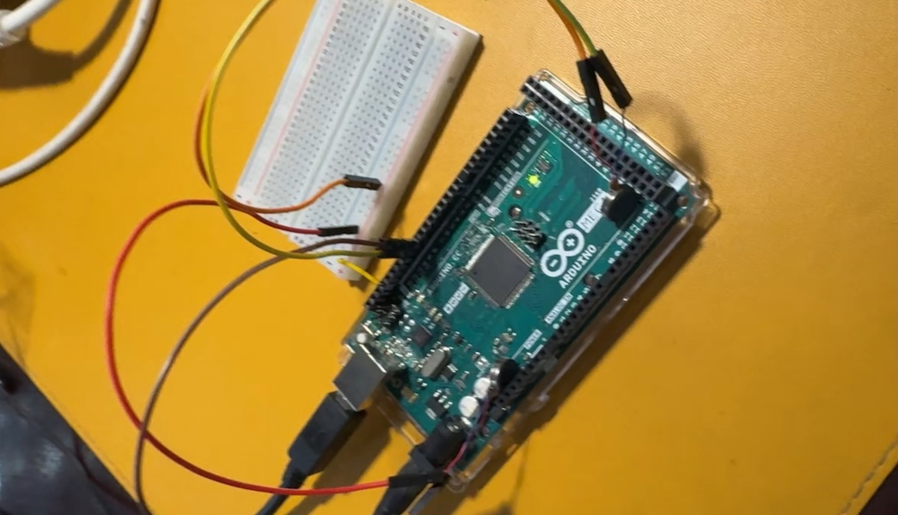

Would You Understand
A two-person wearable that shares heartbeats through haptic vibrations. Experience intimacy through physiological connection.
View projectStudio artist exploring haptic interfaces, biosensing, and embodied interaction
A two-person wearable that shares heartbeats through haptic vibrations. Experience intimacy through physiological connection.
View projectAn interactive sound installation with 20 speakers. Rediscover mindful presence through the sounds of everyday life.
View projectI'm a studio artist who codes, creating experiences that explore how technology can facilitate new forms of human connection and awareness.
My work spans haptic interfaces, biosensing, and spatial audio—building prototypes with Arduino, MaxMSP, and vibrotactile systems. I'm interested in the emotional and perceptual dimensions of technology.
BA Studio Arts, Bard College (2023)
Applying to MIT Media Lab and creative technology programs